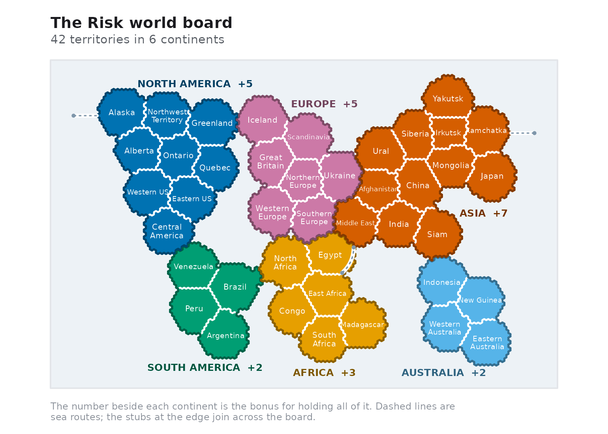
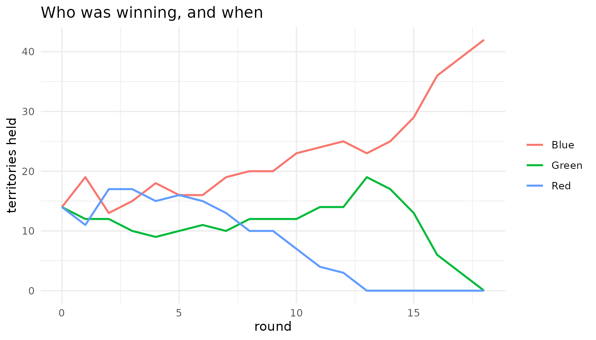
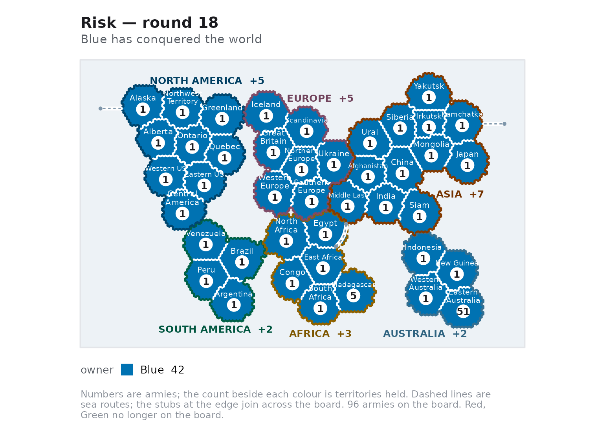

This article scripts a whole game: setting up the board, taking a turn by hand, handing the turn to an AI agent, and reading the map.
The board
rk_world() returns the classic 42-territory board as an
rk_map.
world <- rk_world()
world
#> <rk_map> 42 territories, 6 continents
#> Bonuses: North_America +5, South_America +2, Europe +5, Africa +3, Asia +7, and Australia +2
world$continent_bonus
#> North_America South_America Europe Africa Asia
#> 5 2 5 3 7
#> Australia
#> 2
rk_neighbors(world, "Brazil")
#> [1] "Venezuela" "Peru" "Argentina" "North_Africa"Plotting the map alone shows the adjacency graph coloured by continent. Note Alaska and Kamchatka: the board wraps around, so the segment between them crosses the whole picture.
rk_plot_map(world)
Custom boards are welcome; rk_map() validates the graph
(it must be symmetric, and every territory must belong to exactly one
continent) and lays out any board you give it on a circle when you
supply no coordinates.
mini <- rk_map(
territories = c("A", "B", "C", "D"),
adjacency = list(
A = c("B", "C"), B = c("A", "D"), C = c("A", "D"), D = c("B", "C")
),
continent = list(North = c("A", "B"), South = c("C", "D")),
continent_bonus = c(North = 2, South = 3)
)
mini
#> <rk_map> 4 territories, 2 continents
#> Bonuses: North +2 and South +3Dealing a game
game <- rk_game(c("Red", "Blue", "Green"), seed = 2024)
game
#> <rk_game> 3 players on 42 territories, round 1
#> Turn: Red (reinforce phase)
#> * Red: 14 territories, 35 armies, 0 continents
#> Blue: 14 territories, 35 armies, 0 continents
#> Green: 14 territories, 35 armies, 0 continentsEach player is dealt an equal share of the territories and spreads the standard number of starting armies (35 for three players) over them.
summary(game)
#> # A tibble: 3 × 6
#> player territories armies continents reinforcements alive
#> <chr> <int> <int> <int> <int> <lgl>
#> 1 Red 14 35 0 4 TRUE
#> 2 Blue 14 35 0 4 TRUE
#> 3 Green 14 35 0 4 TRUEOne turn by hand
A turn runs in three phases. Every function returns a new game, so you can keep the old one and compare, replay or branch.
Reinforce
The allowance is one army per three territories, never fewer than three, plus the bonus for every continent held outright.
rk_reinforcements(game, "Red")
#> [1] 4Placements are a named vector that must account for every army:
front <- rk_legal_attacks(game, "Red")
head(front, 3)
#> # A tibble: 3 × 5
#> from to defender att_armies def_armies
#> <chr> <chr> <chr> <int> <int>
#> 1 Northwest_Territory Alaska Blue 3 2
#> 2 Northwest_Territory Alberta Blue 3 3
#> 3 Northwest_Territory Ontario Green 3 3
placements <- c(rk_reinforcements(game, "Red"))
names(placements) <- front$from[[1]]
game <- rk_reinforce(game, "Red", placements)
game$phase
#> [1] "attack"Attack
set.seed(7)
targets <- rk_legal_attacks(game, "Red")
best <- targets[which.min(targets$def_armies), ]
best
#> # A tibble: 1 × 5
#> from to defender att_armies def_armies
#> <chr> <chr> <chr> <int> <int>
#> 1 Peru Argentina Green 2 1
game <- rk_attack(game, best$from, best$to)
game$last_battle
#> <rk_battle> territory repelled after 1 duel
#> Attacker: 1 left · Defender: 1 left
rk_owner(game, best$to)
#> [1] "Green"The attack is resolved by rk_battle() internally, so the
same odds apply as in the combat engine — and
rk_battle_odds() will tell you beforehand what you are
getting into:
rk_battle_odds(best$att_armies, best$def_armies, method = "exact")
#> # A tibble: 1 × 7
#> att_armies def_armies method n p_conquer e_att_survivors e_def_survivors
#> <int> <int> <chr> <int> <dbl> <dbl> <dbl>
#> 1 2 1 exact NA 0.417 1.42 0.583Fortify and hand over
One move along a path of your own territories ends the turn.
own <- rk_territories(game, "Red")
from <- own[which.max(rk_armies(game, own))]
reachable <- intersect(rk_neighbors(game, from), own)
if (length(reachable) > 0 && rk_armies(game, from) > 1) {
game <- rk_fortify(game, from, reachable[[1]], 1)
}
game <- rk_end_turn(game)
game$turn
#> [1] "Blue"Letting the agents finish it
rk_ai() returns a policy — a function of
(game, player) that proposes an action.
rk_step() applies one action; rk_play() runs
the whole game.
bot <- rk_ai("aggressive")
bot(game, game$turn)$action
#> [1] "reinforce"
set.seed(11)
result <- rk_play(
game,
policies = c(Red = "aggressive", Blue = "cautious", Green = "random"),
max_rounds = 40
)
result
#> <rk_game_result> 3 players
#> Winner: Blue after 18 rounds
#> Policies: Red (aggressive), Blue (cautious), and Green (random)The result carries the standings for every round, which makes the shape of the game easy to see:
standings <- result$standings
ggplot2::ggplot(
standings,
ggplot2::aes(round, territories, colour = player)
) +
ggplot2::geom_line(linewidth = 0.8) +
ggplot2::labs(
x = "round", y = "territories held", colour = NULL,
title = "Who was winning, and when"
) +
ggplot2::theme_minimal()
rk_plot_map(result$game)
Writing your own agent
A policy is any function of (game, player) that returns
an action list, so a new strategy is a few lines. This one always
reinforces its weakest territory and never attacks:
turtle <- function(game, player) {
if (identical(game$phase, "reinforce")) {
own <- rk_territories(game, player)
placements <- rk_reinforcements(game, player)
names(placements) <- own[which.min(rk_armies(game, own))]
return(list(action = "reinforce", placements = placements))
}
list(action = "end_turn")
}
set.seed(5)
turtle_result <- rk_play(
rk_game(c("Red", "Blue"), seed = 5),
policies = list(Red = rk_ai("aggressive"), Blue = turtle),
max_rounds = 25
)
turtle_result
#> <rk_game_result> 2 players
#> Winner: Red after 8 rounds
#> Policies: Red (custom) and Blue (custom)Turtling does not work. Neither does anything else, reliably — which
is why rk_tournament() exists.
The app
rk_run_app() opens a four-tab Shiny application: play
against the agents on a clickable map, analyse a single duel, simulate
battles against the exact solution, and run tournaments in the strategy
lab.